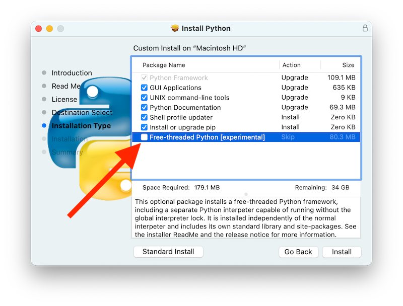

5. 於 macOS 使用 Python¶
This document aims to give an overview of macOS-specific behavior you should know about to get started with Python on Mac computers. Python on a Mac running macOS is very similar to Python on other Unix-derived platforms, but there are some differences in installation and some features.
There are various ways to obtain and install Python for macOS. Pre-built versions of the most recent versions of Python are available from a number of distributors. Much of this document describes use of the Pythons provided by the CPython release team for download from the python.org website. See Alternative Distributions for some other options.
5.1. Using Python for macOS from python.org¶
5.1.1. 安裝步驟¶
For current Python versions
(other than those in security status), the release team produces a
Python for macOS installer package for each new release.
A list of available installers
is available here.
We recommend using the most recent supported Python version where possible.
Current installers provide a
universal2 binary build
of Python which runs natively on all Macs (Apple Silicon and Intel) that are
supported by a wide range of macOS versions,
currently typically from at least macOS 10.13 High Sierra on.
The downloaded file is a standard macOS installer package file (.pkg).
File integrity information (checksum, size, sigstore signature, etc) for each file is included
on the release download page. Installer packages and their contents are signed and notarized
with Python Software Foundation Apple Developer ID certificates
to meet macOS Gatekeeper requirements.
For a default installation, double-click on the downloaded installer package file. This should launch the standard macOS Installer app and display the first of several installer windows steps.

Clicking on the Continue button brings up the Read Me for this installer.
Besides other important information, the Read Me documents which Python version is
going to be installed and on what versions of macOS it is supported. You may need
to scroll through to read the whole file. By default, this Read Me will also be
installed in /Applications/Python 3.13/ and available to read anytime.

Clicking on Continue proceeds to display the license for Python and for other included software. You will then need to Agree to the license terms before proceeding to the next step. This license file will also be installed and available to be read later.

After the license terms are accepted, the next step is the Installation Type display. For most uses, the standard set of installation operations is appropriate.

By pressing the Customize button, you can choose to omit or select certain package components of the installer. Click on each package name to see a description of what it installs. To also install support for the optional experimental free-threaded feature, see Installing Free-threaded Binaries.

In either case, clicking Install will begin the install process by asking
permission to install new software. A macOS user name with Administrator privilege
is needed as the installed Python will be available to all users of the Mac.
When the installation is complete, the Summary window will appear.

Double-click on the Install Certificates.command
icon or file in the /Applications/Python 3.13/ window to complete the
installation.

This will open a temporary Terminal shell window that will use the new Python to download and install SSL root certificates for its use.

If Successfully installed certifi and update complete appears
in the terminal window, the installation is complete.
Close this terminal window and the installer window.
預設安裝會包含：
會有一個
Python 3.13資料夾在你的Applications資料夾中。在這裡你可以找到 IDLE，它是作為官方 Python 發行版標準組成的開發環境；以及 Python Launcher，它負責處理在 Finder 中雙擊 Python 腳本的操作。/Library/Frameworks/Python.framework框架，包括 Python 可執行檔案 (executable) 和函式庫 (library)。安裝程式將此位置新增到 shell 路徑。要解除安裝 Python ，你可以移除這三個東西。Python 可執行檔案的符號連結 (symlink) 則放在/usr/local/bin/中。
備註
Recent versions of macOS include a python3 command in /usr/bin/python3
that links to a usually older and incomplete version of Python provided by and for use by
the Apple development tools, Xcode or the Command Line Tools for Xcode.
You should never modify or attempt to delete this installation, as it is
Apple-controlled and is used by Apple-provided or third-party software. If
you choose to install a newer Python version from python.org, you will have
two different but functional Python installations on your computer that
can co-exist. The default installer options should ensure that its python3
will be used instead of the system python3.
5.1.2. 如何執行 Python 腳本¶
There are two ways to invoke the Python interpreter.
If you are familiar with using a Unix shell in a terminal
window, you can invoke python3.13 or python3 optionally
followed by one or more command line options (described in 命令列與環境).
The Python tutorial also has a useful section on
using Python interactively from a shell.
You can also invoke the interpreter through an integrated development environment. IDLE is a basic editor and interpreter environment which is included with the standard distribution of Python. IDLE includes a Help menu that allows you to access Python documentation. If you are completely new to Python, you can read the tutorial introduction in that document.
There are many other editors and IDEs available, see 編輯器與 IDE for more information.
To run a Python script file from the terminal window, you can invoke the interpreter with the name of the script file:
python3.13myscript.py
從 Finder 執行你的腳本時，你可以：
把它拖曳到 Python Launcher
透過 Finder Info 視窗選擇 Python Launcher 作為開啟腳本（或任何
.py腳本）的預設應用程式，然後雙擊腳本。Python Launcher 有各種用來控制腳本啟動方式的選項。拖曳選項可以讓你一次更改多個選項，或使用其Preferences選單以全域性地更改內容。
Be aware that running the script directly from the macOS Finder might produce different results than when running from a terminal window as the script will not be run in the usual shell environment including any setting of environment variables in shell profiles. And, as with any other script or program, be certain of what you are about to run.
5.2. Alternative Distributions¶
Besides the standard python.org for macOS installer, there are third-party
distributions for macOS that may include additional functionality.
Some popular distributions and their key features:
- ActivePython
Installer with multi-platform compatibility, documentation
- Anaconda
Popular scientific modules (such as numpy, scipy, and pandas) and the
condapackage manager.- Homebrew
Package manager for macOS including multiple versions of Python and many third-party Python-based packages (including numpy, scipy, and pandas).
- MacPorts
Another package manager for macOS including multiple versions of Python and many third-party Python-based packages. May include pre-built versions of Python and many packages for older versions of macOS.
Note that distributions might not include the latest versions of Python or other libraries, and are not maintained or supported by the core Python team.
5.3. 安裝額外的 Python 套件¶
更多資訊請見 Python Packaging User Guide。
5.4. 開發 GUI 程式¶
於 Mac 上使用 Python 來建立 GUI 應用程式有許多選項。
標準的 Python GUI 工具套件是基於跨平臺 Tk 工具套件 (https://www.tcl.tk) 的 tkinter。macOS 原生版本的 Tk 有包含於安裝程式中。
PyObjC 是一個 Apple Objective-C/Cocoa 框架的 Python 繫結 (binding)。有關 PyObjC 的資訊請見 pyobjc。
有許多替代 macOS GUI 工具套件可用，包含：
PySide：Qt GUI 工具包的官方 Python 繫結。
PyQt：Qt 的替代 Python 繫結。
Kivy：一個支援桌面和行動平臺的跨平臺 GUI 工具包。
Toga：BeeWare 專案的一部分；支援桌面、行動、網頁和控制台應用程式。
wxPython：一個支援桌面作業系統的跨平臺工具包。
5.5. 進階主題¶
5.5.1. Installing Free-threaded Binaries¶
在 3.13 版被加入: (Experimental)
備註
Everything described in this section is considered experimental, and should be expected to change in future releases.
The python.org Python for macOS
installer package can optionally install an additional build of
Python 3.13 that supports PEP 703, the experimental free-threading feature
(running with the global interpreter lock disabled).
Check the release page on python.org for possible updated information.
Because this feature is still considered experimental, the support for it is not installed by default. It is packaged as a separate install option, available by clicking the Customize button on the Installation Type step of the installer as described above.
If the box next to the Free-threaded Python package name is checked,
a separate PythonT.framework will also be installed
alongside the normal Python.framework in /Library/Frameworks.
This configuration allows a free-threaded Python 3.13 build to co-exist
on your system with a traditional (GIL only) Python 3.13 build with
minimal risk while installing or testing. This installation layout is itself
experimental and is subject to change in future releases.
Known cautions and limitations:
The UNIX command-line tools package, which is selected by default, will install links in
/usr/local/binforpython3.13t, the free-threaded interpreter, andpython3.13t-config, a configuration utility which may be useful for package builders. Since/usr/local/binis typically included in your shellPATH, in most cases no changes to yourPATHenvironment variables should be needed to usepython3.13t.For this release, the Shell profile updater package and the
Update Shell Profile.commandin/Applications/Python 3.13/do not support the free-threaded package.The free-threaded build and the traditional build have separate search paths and separate
site-packagesdirectories so, by default, if you need a package available in both builds, it may need to be installed in both. The free-threaded package will install a separate instance of pip for use withpython3.13t.To install a package using pip without a venv:
python3.13t-m pip install <package_name>
When working with multiple Python environments, it is usually safest and easiest to create and use virtual environments. This can avoid possible command name conflicts and confusion about which Python is in use:
python3.13t-m venv <venv_name>然後 activate。
執行 free-threaded（自由執行緒）版本的 IDLE：
python3.13t-m idlelibThe interpreters in both builds respond to the same PYTHON environment variables which may have unexpected results, for example, if you have
PYTHONPATHset in a shell profile. If necessary, there are command line options like-Eto ignore these environment variables.The free-threaded build links to the third-party shared libraries, such as
OpenSSLandTk, installed in the traditional framework. This means that both builds also share one set of trust certificates as installed by the Install Certificates.command script, thus it only needs to be run once.If you cannot depend on the link in
/usr/local/binpointing to thepython.orgfree-threadedpython3.13t(for example, if you want to install your own version there or some other distribution does), you can explicitly set your shellPATHenvironment variable to include thePythonTframeworkbindirectory:export PATH="/Library/Frameworks/PythonT.framework/Versions/3.13/bin":"$PATH"
The traditional framework installation by default does something similar, except for
Python.framework. Be aware that having both frameworkbindirectories inPATHcan lead to confusion if there are duplicate names likepython3.13in both; which one is actually used depends on the order they appear inPATH. Thewhich python3.xorwhich python3.xtcommands can show which path is being used. Using virtual environments can help avoid such ambiguities. Another option might be to create a shell alias to the desired interpreter, like:alias py3.13="/Library/Frameworks/Python.framework/Versions/3.13/bin/python3.13" alias py3.13t="/Library/Frameworks/PythonT.framework/Versions/3.13/bin/python3.13t"
5.5.2. 使用命令列安裝¶
If you want to use automation to install the python.org installer package
(rather than by using the familiar macOS Installer GUI app),
the macOS command line installer utility lets you select non-default
options, too. If you are not familiar with installer, it can be
somewhat cryptic (see man installer for more information).
As an example, the following shell snippet shows one way to do it,
using the 3.13.0b2 release and selecting the free-threaded interpreter
option:
RELEASE="python-3.13.0b2-macos11.pkg"
# download installer pkg
curl -O https://www.python.org/ftp/python/3.13.0/${RELEASE}
# create installer choicechanges to customize the install:
# enable the PythonTFramework-3.13 package
# while accepting the other defaults (install all other packages)
cat > ./choicechanges.plist <<EOF
<?xml version="1.0" encoding="UTF-8"?>
<!DOCTYPE plist PUBLIC "-//Apple//DTD PLIST 1.0//EN" "http://www.apple.com/DTDs/PropertyList-1.0.dtd">
<plist version="1.0">
<array>
<dict>
<key>attributeSetting</key>
<integer>1</integer>
<key>choiceAttribute</key>
<string>selected</string>
<key>choiceIdentifier</key>
<string>org.python.Python.PythonTFramework-3.13</string>
</dict>
</array>
</plist>
EOF
sudo installer -pkg ./${RELEASE} -applyChoiceChangesXML ./choicechanges.plist -target /
You can then test that both installer builds are now available with something like:
$ # test that the free-threaded interpreter was installed if the Unix Command Tools package was enabled
$ /usr/local/bin/python3.13t -VV
Python 3.13.0b2 experimental free-threading build (v3.13.0b2:3a83b172af, Jun 5 2024, 12:57:31) [Clang 15.0.0 (clang-1500.3.9.4)]
$ # and the traditional interpreter
$ /usr/local/bin/python3.13 -VV
Python 3.13.0b2 (v3.13.0b2:3a83b172af, Jun 5 2024, 12:50:24) [Clang 15.0.0 (clang-1500.3.9.4)]
$ # test that they are also available without the prefix if /usr/local/bin is on $PATH
$ python3.13t -VV
Python 3.13.0b2 experimental free-threading build (v3.13.0b2:3a83b172af, Jun 5 2024, 12:57:31) [Clang 15.0.0 (clang-1500.3.9.4)]
$ python3.13 -VV
Python 3.13.0b2 (v3.13.0b2:3a83b172af, Jun 5 2024, 12:50:24) [Clang 15.0.0 (clang-1500.3.9.4)]
備註
Current python.org installers only install to fixed locations like
/Library/Frameworks/, /Applications, and /usr/local/bin.
You cannot use the installer -domain option to install to
other locations.
5.5.3. 發行 Python 應用程式¶
A range of tools exist for converting your Python code into a standalone distributable application:
py2app：支援從 Python 專案打包成 macOS
.app。Briefcase：BeeWare 專案的一部分；支援建立 macOS
.app的跨平台打包工具，亦為管理簽署和驗證 (notarization) 的工具。PyInstaller：一個跨平臺打包工具，可以將單一檔案或資料夾打包成可分發的檔案。
5.5.4. App Store Compliance¶
Apps submitted for distribution through the macOS App Store must pass Apple's app review process. This process includes a set of automated validation rules that inspect the submitted application bundle for problematic code.
The Python standard library contains some code that is known to violate these automated rules. While these violations appear to be false positives, Apple's review rules cannot be challenged. Therefore, it is necessary to modify the Python standard library for an app to pass App Store review.
The Python source tree contains
a patch file that will remove
all code that is known to cause issues with the App Store review process. This
patch is applied automatically when CPython is configured with the
--with-app-store-compliance option.
This patch is not normally required to use CPython on a Mac; nor is it required if you are distributing an app outside the macOS App Store. It is only required if you are using the macOS App Store as a distribution channel.
5.6. 其他資源¶
The python.org Help page has links to many useful resources. The Pythonmac-SIG mailing list is another support resource specifically for Python users and developers on the Mac.